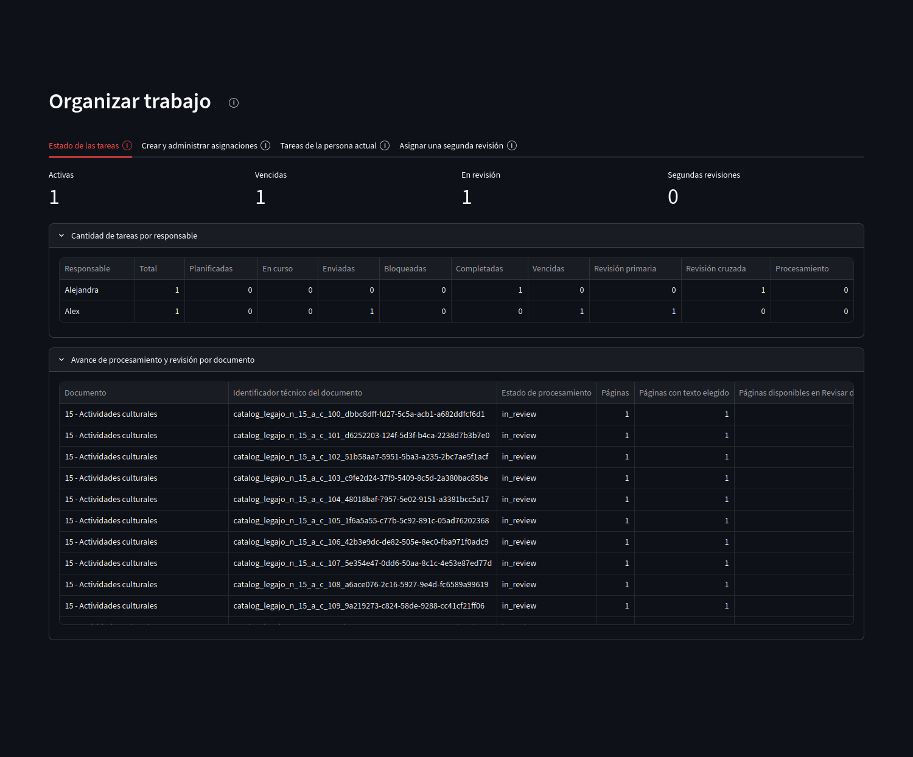
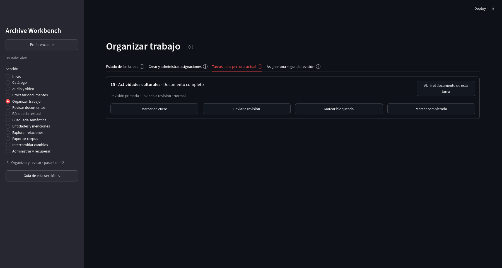
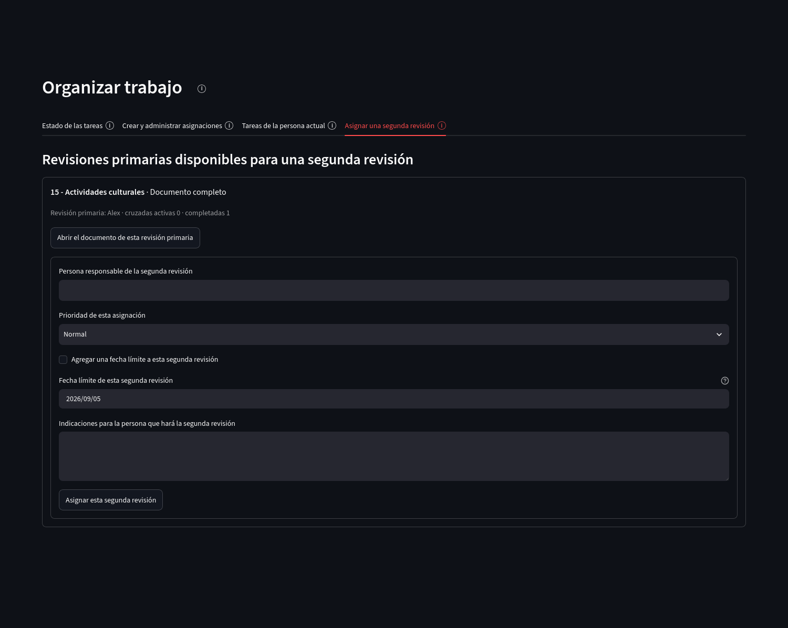

Organización y revisión
Organizar trabajo
Esta sección distribuye tareas entre las personas del proyecto. Una asignación registra quién debe realizar una tarea, sobre qué documento o páginas, con qué prioridad y en qué estado se encuentra.
Estado de las tareas
Resume tareas activas, vencidas, enviadas a revisión y segundas revisiones. También muestra carga por responsable y avance por documento.
{kind=link}

Abrir captura completa
Asignaciones de trabajo
Una asignación puede corresponder a seguimiento de procesamiento, revisión primaria u otras tareas habilitadas. El alcance puede ser un documento completo o páginas concretas.
Las asignaciones existentes pueden actualizar responsable, estado, prioridad, fecha límite e indicaciones. Cada modificación se conserva en el historial de la asignación, de modo que el estado actual no borra los cambios anteriores.
Tareas propias
La pestaña reúne únicamente las asignaciones correspondientes al nombre de usuario activo. Desde allí se abre el documento de la tarea y se actualiza su estado.
{kind=link}

Abrir captura completa
Segunda revisión
Una segunda revisión permite que otra persona revise de forma independiente un trabajo enviado desde la revisión primaria. La asignación conserva la relación con la revisión que le dio origen.
{kind=link}

Abrir captura completa